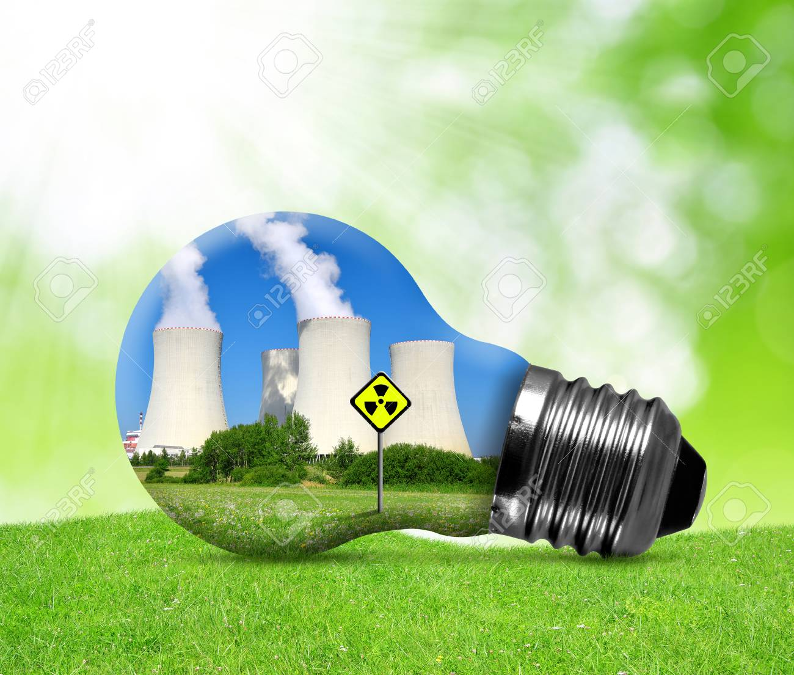

La energía nuclear tiene la ventaja de producir un bajo impacto ambiental, lo que la convierte en una fuente sustentable, ya que produce ínfimas cantidades de gases que provocan el llamado efecto invernadero.
El uranio es uno de los combustibles que permiten que se lleve a cabo este proceso, y es también el más utilizado en la mayoría de los reactores nucleares, por ser uno de los minerales más abundantes en la naturaleza.
La energía nuclear no es sólo el resultado de un proceso físico-químico, sino que constituye una de las formas de desarrollo científico-tecnológico más avanzadas, ya que además de producir energía eléctrica, contribuye con el avance de otras disciplinas y ciencias como la ingeniería, la metalurgia, la siderurgia, la mecánica y la medicina, entre otras, impactando favorablemente en el desarrollo de los sectores de salud, agrícola e industrial.
La energía nuclear es limpia durante su generación. De hecho, la mayoría de reactores nucleares emiten, solamente, inofensivo vapor de agua a la atmósfera. Ni CO2, ni metano, ni ningún otro gas contaminante o que contribuya al cambio climático.
La generación de energía es barata.
Se puede generar una enorme cantidad de energía con solo una central, debido al gran poder de la energía nuclear.
Es casi inagotable. De hecho, hay expertos que consideran que la deberíamos clasificar como renovable, dado que las reservas de uranio actuales permitirían seguir produciendo la misma energía que ahora durante miles de años.
Su producción es constante. Al contrario que muchas renovables (como la solar que no se puede generar por la noche o la eólica que no se puede generar sin viento), su producción es enorme y constante durante cientos de días seguidos. El 90% del año, excluyendo recargas y paradas de mantenimiento programadas, la energía nuclear funciona a pleno rendimiento.

Sus residuos son muy peligrosos. Tanto para la salud como para el medio ambiente en general. Los residuos radiactivos son muy contaminantes, mortales y tardan miles de años en degradarse, lo que hace que su gestión sea muy delicada. De hecho, es un problema que aún no hemos resuelto.
Los accidentes pueden ser muy graves. Las centrales nucleares están dotadas de grandes medidas de seguridad, pero puede haber accidentes y, en ese caso, resultar muy graves. La Isla de las Tres Millas en Estados Unidos, Fukushima en Japón o Chernobyl en la antigua Unión Soviética son los ejemplos de lo que puede ocurrir.
Son objetivos vulnerables. Tanto para catástrofes naturales como actos terroristas, una central nuclear es un objetivo que puede causar un enorme daño si se destruye o daña.